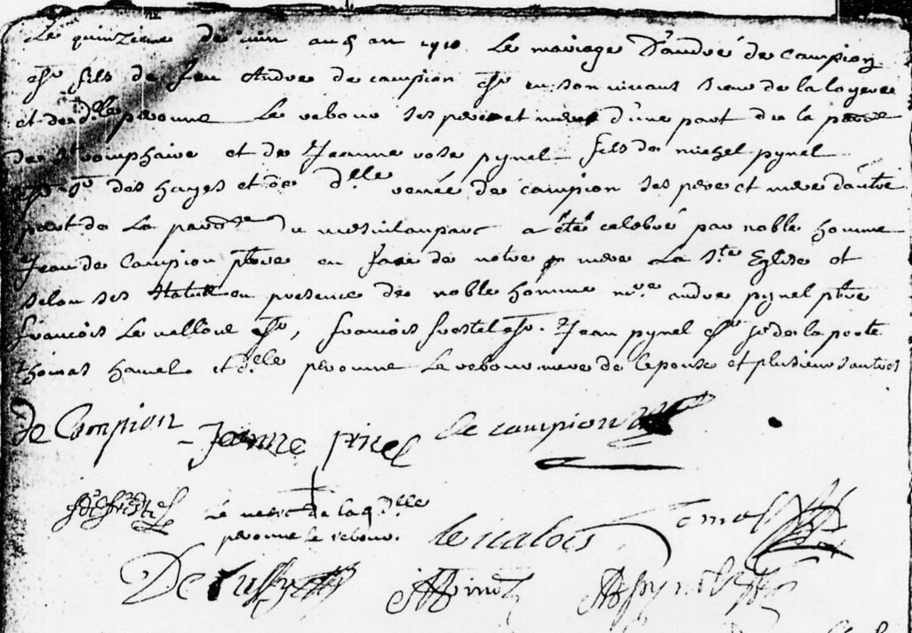
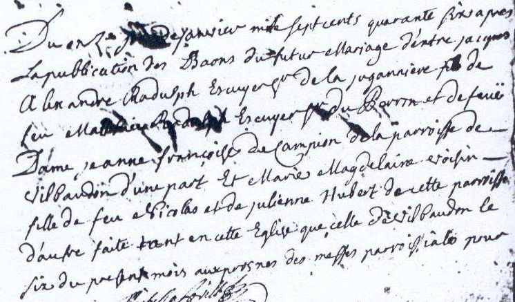
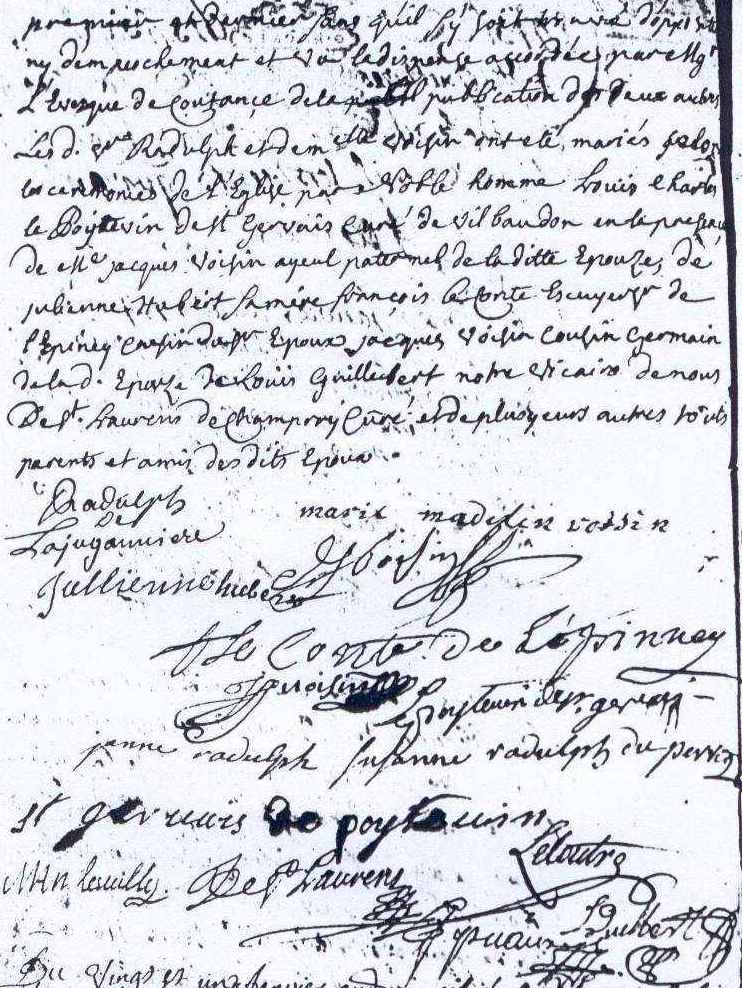
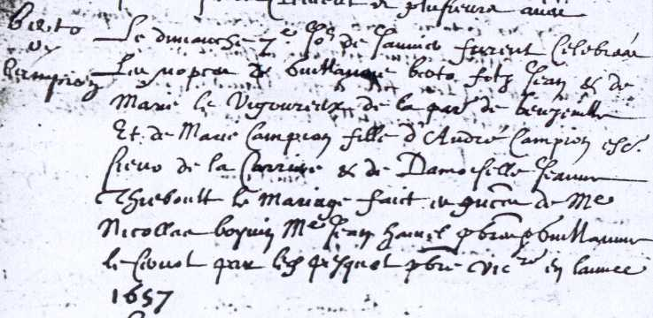

REGISTRES
PAROISSAUX et d'ETAT-CIVIL (1/2)
REGISTRES
PAROISSAUX et d'ETAT-CIVIL (1/2)
REGISTRES
PAROISSAUX et d'ETAT-CIVIL (1/2)
REGISTRES
PAROISSAUX et d'ETAT-CIVIL (1/2)
SAINT-JEAN-DES-BAISANTS
Référence : Registres BMS de
Saint-Jean-des-Baisants, 5 Mi 509
Provenance : Archives Départementales de
Saint-Lô
- Le 13 février 1656, mariage d'André Campion et Catherine Lebarrily
Le treize jour dud[it] mois [février] noble homme
andré campion esc[uye]r s[ieu]r de la carriere fut
espouzé avec catherine le barilly p[rese]nce de noble
homme th[om]as Campion
Union entre :
Noble homme André CAMPION, Sieur de la Carrière, et Demoiselle Jeanne THIBOUT
4 enfants sont nés :
1. Roberde CAMPION, née le 24 mai 1611 à Saint-Jean-des-Baisants. Témoins : 1. Guillaume des MOUTIERS ; 2. Demoiselle Roberde, femme de Guillaume ; Union en février 1636 à Saint-Jean-des-Baisants avec Pierre LEVAILLANT.
2. Jacqueline CAMPION, née le 12 mars 1613 à
Saint-Jean-des-Baisants.
Témoins : 1. Georges THIBOUT ; 2. Demoiselle Jacqueline, femme
de Georges ; 3. Jean de BREBEUF ; 4. Demoiselle Marie, femme de Jean
;
3. Thomas CAMPION, né le 13 janvier 1615 à
Saint-Jean-des-Baisants.
Témoins : 1. Thomas THIBOUT, Ecuyer, Parrain ; Union en 1638
avec Jeanne LESUEUR. Décédé le 24 septembre 1670
à Saint-Jean-des-Baisants à l'âge de 55
ans.
4. Anne CAMPION, née le 17 juin 1617 à Saint-Jean-des-Baisants. Témoins : 1. Robert THIBOUT ; 2. Anne, Marraine , Femme du précédent
Union en 1638 entre :
Thomas CAMPION, écuyer, sieur du Mesnil Gonfrey. Troisième enfant d'André CAMPION et Jeanne THIBOUT. Décédé le 24 septembre 1670 à Saint-Jean-des-Baisants à l'âge de 55 ans, inhumé "dans l'église sous le crucifix" Témoins : 1. Michel de BAUDRE, écuyer , fils en loy; 2. Charles LEPRESTRE, fils en loy ; 3. Robert CROCQUEVIEILLE ; 4. Michel LEFEBVRE
Signature : oui.
Présences :
- 13-01-1656 Saint-Jean-des-Baisants, X CAMPION-de BARCILLY, ecuier
- 06-02-1670 Saint-Jean-des-Baisants, X LEMIERE-JEANNE, sieur du
Mesnil, ecuier, oncle de l'épouse
- 17-06-1670 Saint-Jean-des-Baisants, X LECHIPPEY-GUERIEL, escuier,
s
et Jeanne LESUEUR
Présences :
- 06-12-1639 Saint-Jean-des-Baisants, O Jeanne GUERIEL, marraine,
femme de Thomas CAMPION
5 enfants sont nés :
1. Marguerite CAMPION,
née le 2 août 1640 à Saint-Jean-des-Baisants.
Témoins : 1. Pierre LESUEUR, Écuyer, parrain ; 2.
Demoiselle Marguerite HEBERT, marraine
2. Marie CAMPION, née le 27 octobre 1641 à Saint-Jean-des-Baisants. Témoins : 1. Jacques de BREBEUF, Sieur de la Barbée, parrain; 2. Demoiselle Marie LEPREVOST, marraine ; Union le 6 octobre 1665 à Saint-Jean-des-Baisants avec Charles LEPRESTRE. Décédée après 1684.
3. Madeleine CAMPION, née le 22 avril 1644 à Saint-Jean-des-Baisants. Témoins : 1. Jacques DURAND, parrain ; 2. Madeleine du MOUTIERS, marraine ; Union le 23 janvier 1663 à Saint-Jean-des-Baisants avec Michel de BAUDRE.
4. Julienne CAMPION, Née le 28 mars 1648 à Saint-Jean-des-Baisants. Témoins : 1. Jean de BREBEUF, écuyer ; 2. Julienne, marraine, femme de Jean.
5. René CAMPION, Né le 1 juin 1653 à Saint-Jean-des-Baisant. Parrain : René LE PROVOST, sieur de Saint Jean
le premier jour de juin 1653 Rene fils de noble homme
thomas Campion s[ieu]r du mesnil et dam[oise]lle Jeanne le
Sueur fut baptise et no[mm]é par noble ho[mm]e Rene le provost
s[ieu]r de S[ain]t Jean
Union le 6 octobre 1665 à
Saint-Jean-des-Baisants entre :
Charles
LEPRESTRE, enfant de Jean LEPRESTRE
et Madeleine LECHARTIER.
Décédé après 1708. Charpentier. Signature
: oui.
présences :
- 18-09-1708, X LEPRESTRE-PICARD, père de l'époux,
s
- 24-09-1670, + Thomas CAMPION, fils en loy, s
- 13-02-1684 X LEPRESTRE-GODEY, frère du futur
et Demoiselle Marie CAMPION, enfant de Thomas CAMPION et Jeanne LESUEUR
présences :
- 13-02-1684 X LEPRESTRE-GODEY, femme de Charles LEPRESTRE,
frère du futur
9 enfants sont nés :
1. Jean LEPRESTRE, né le 16 octobre 1667 à
Saint-Jean-des-Baisants. Témoins : 1. Jean LEPRESTRE, parrain
; 2. Demoiselle du MESNIL, marraine ; Union avec Anne BOIVIN.
Décédé le 25 février 1719 à
Saint-Jean-des-Baisants à l'âge de 51 ans.
2. Gillette LEPRESTRE, née le 22 avril 1670 à Saint-Jean-des-Baisants. Témoins : 1. Philippe LEBARRIER, parrain ; 2. Gillette MENANT, marraine ; Décédée le 27 novembre 1671 à Saint-Jean-des-Baisants à l'âge de 1 an.
3. Robert LEPRESTRE, né (?) en 1671. Décédé le 1er novembre 1675 à Saint-Jean-des-Baisants.
4. Jacques LEPRESTRE, né le 14 mars 1673 à Saint-Jean-des-Baisants. Témoins : 1. Robert LEMIERE, parrain ; 2. Guillemette DEFAUDAIS, marraine, femme du parrain ; 3. Mathurin GODEY; 4. Françoise LANGLOIS ; Union le 18 septembre 1708 avec Anne PICARD.
5. Anne LEPRESTRE, née le 11 juin 1674 à Saint-Jean-des-Baisants. Témoins : 1. Adrien GODEY, parrain ; 2. Anne PICARD, marraine, femme du parrain ;
6. Louis LEPRESTRE, né le 1er novembre 1677 à Saint-Jean-des-Baisants. Témoins : 1. Louis HUE, Bourgeois de Torigni, parrain; 2. Demoiselle Marie de BAUDRE, marraine, femme du parrain ; Union le 20 janvier 1721 à Saint-Romphaire avec Jacqueline HARIVEL. Décédé entre 1753 et 1762.
7. Julien LEPRESTRE, né le 24 décembre 1678 à Saint-Jean-des-Baisants. Témoins : 1. Jean LEBARRIER, parrain ; 2. Françoise GODEY, marraine ;
8. Marie LEPRESTRE, née le 30 juin 1680 à Saint-Jean-des-Baisants. Témoins : 1. Toussaint GODEY, parrain ; 2. Françoise GODEY , marraine ; Décédée le 5 juillet 1680 à Saint-Jean-des-Baisants.
9. Marguerite LEPRESTRE, née le 11 mai 1684 à Saint-Jean-des-Baisants. Témoins : 1. Jean GUERARD, parrain, fils de la marraine ; 2. Marguerite LEMIERE, marraine.
Autres Actes :
- 13-01-1656 - Mariage d'André
CAMPION, sieur de la
Carrière, ecuier, et de Catherine de BARCILLY. Témoin :
Thomas
CAMPION, ecuier
- 12-06-1660 - Mariage de Julien GODEY et Marie CAMPION. Témoins : Hervé LEPROVOST,
seigneur de Saint Jean, ecuier ; Jean COTIGNY ; Marie GODEY
- 23-08-1661 - Inhumation de Catherine CAMPION
Référence : Registres paroissiaux
Provenance : Archives départementales de la Manche en ligne
Le 26 novembre 1718
Référence : Registres paroissiaux
Provenance : Bernard Leconte et Raymonde Furlan
1 André de
CAMPION ° ? ../../1640 +
20/05/1709 Saint-Romphaire
1- x ? ../../1670
1- x Peronne LEREBOURS ° ? ../../1651 + 19/04/1744
Saint-Romphaire
1-1 Marie Anne de CAMPION
1-1 x 26/11/1718 La Mancellière-sur-Vire
1-1 x Grégoire GUILLON ° ? Cerisy-la-Salle1-2 Louise de CAMPION + 01/11/1702 Saint-Romphaire
1-3 Marguerite de CAMPION ° ? ../../1672 + 21/08/1747 Saint-Romphaire
1-3 x 24/04/1693 Saint-Romphaire
1-3 x Thomas HAMEL ° ? ../../1653, soldat1-4 Charles de CAMPION ° ? ../../1677 + 03/08/1700 Saint-Romphaire
1-5 Françoise de CAMPION ° ? ../../1678 + 08/08/1713 Saint-Romphaire
1-6 Jean de CAMPION ° ? ../../1681 + 22/08/1746 Saint-Romphaire, prêtre
1-7 Marie Magdeleine de CAMPION ° 31/01/1685 Sainte Suzanne sur Vire
1-8 André de CAMPION ° ? ../../1687 + 28/09/1713
1-8 x 15/06/1710 Le Mesnil-Opac
1-8 x Jeanne PINEL1-8.1 Marie Madeleine CAMPION ° 04/09/1711 Saint-Romphaire + 04/05/1762 La Mancellière-sur-Vire
1-8.1 x Jean EUDELINE + < ..../1752
1-8.1 x 04/10/1735 Saint-Romphaire
1-8.1 x Thomas de MALHERBE ° ? ../../1710 Septvents1-8.2 Jean Baptiste de CAMPION ° 29/12/1713
1-8.2 x 10/11/1733 Saint-Romphaire
1-8.2 x Marie Anne de CAMPION + 30/01/1738
1-8.2 x 30/10/1742 Saint-Romphaire
1-8.2 x Marie Anne DODEMAN ° ? ../../1711 Saint-Sever + 17/05/1771 Saint-Romphaire1-8.2B.1 ? de CAMPION ° ../12/1743 Saint-Romphaire + 25/12/1743 Saint-Romphaire
1-9 Marguerite de CAMPION ° ? ../../1695 + 23/03/1715 Saint-Romphaire
1-9 x 12/08/1713 Saint-Romphaire
1-9 x Charles François GOHIER ° ? ../../1695 + 14/04/1723 Saint-Romphaire
Référence : Registres paroissiaux
Provenance : David Corroler

Le quinzieme de juin aud an 1710 Le mariage d'andré
de campion
es[cuye]r fils de feu Andre de campion es[cuye]r
en son vivant sieur de la loyere
et de d[emoise]lle peronne Le rebours ses pere et mere d'une part de la parr[oisse]
de s[ain]t romphaire et de Jeanne rose pynel fils de michel pynel
es[cuye]r s[ieu]r des hayes et de d[emoise]lle renée
de campion ses pere et mere d'autre
part de La parr[oi]sse du mesnil auparc a été celebré par
noble homme
Jean de Campion pbre[prêtre] en fasce de
notre mere La s[ain]te Eglise et
selon ses statuts en presence de noble homme m[aît]re andre pynel pbre[prêtre]
francois Le vallois es[cuye]r, francois frestel es[cuye]r Jean pynel es[cuye]r
s[ieu]r de la porte
thomas hamel et d[emoise]lle peronne Le rebours mere de lepouse et plusieurs
autres
Référence : Registres paroissiaux
Provenance : Gwen Bazin
Jacques de CAMPION, sieur de Préval, écuyer, (décédé avant 1725) et Marguerite du HERON (décédée avant 1725) étaient parents de :
Référence : Registres d'état-civil
Provenance : Gwen Bazin et Amaury du Rosel
9/3/1757 ° Françoise Jeanne Opportune de Campion fille Pierre Jacques, écuyer, seigneur et patron de la Selle et Marie Françoise Bisson.
23/6/1758 ° Eulalie Jeanne Modeste de Campion fille Pierre Jacques, écuyer et Marie Françoise Bisson.
1759 citée Jacqueline Charlotte Elizabeth de Campion.
30/6/1760 et 25/9:1761 ° et + Madelaine Marie Charlotte Françoise de Campion fille Pierre Jacques, écuyer et Marie Françoise Brisson.
31/12/1762 ° Pierre Armand Jean de Campion fils Pierre Jacques, écuyer et Marie Françoise Brisson.
30/1/1756 ° Marie Anne Jacqueline de Campion fille Pierre Jacques, écuyer et Marie Françoise Brisson.
29/11/1786 x entre Charles Duchemin, sieur de la Bazoche fils + Michel et Anne le Court veuf Anne Moulin de Vire d'une part Et Marie Anne de Campion fille Pierre Jacques Charles, écuyer et Marie Françoise Bisson d'autre part.
31/10/1830 Marie Anne Jacqueline Batilde de CAMPION, religieuse, 75 ans, née à la Selle-la-Forge, fille de Pierre Jacques Charles et de Marie Françoise BISSON, décédée le 31 octobre 1830 à 22h en son château de la Cour de la Selle.
05/01/1831 Marie Anne de CAMPION, veuve de Charles DUCHEMIN, soeur de la précédente, décédée au même lieu le 5 janvier 1831 à 1h, âgée de 78 ans.
Référence : Registres paroissiaux
Provenance : Archives Départementales du
Calvados
1. de
CAMPION Richard
1-A x de la BIGNE Péronne
1-1 de CAMPION René
1-1A x LE GARDEUR Avenotte (x ../../1602 )1-1.1 de CAMPION Thomas (° 20/04/1604 Saint-Germain-de-Tallevende + < ..../1671 )
1-1.1A x de TOURY Madeleine (x ../../1650 )1-1.1.1 de CAMPION René (° ? ../../1651 Saint-Germain-de-Tallevende + e 06/12/1731 Saint-Germain-de-Tallevende)
1-1.1.1A x du BICHOT Marie Anne (° ../../1652 x 07/06/1672 Saint-Germain-de-Tallevende + < ..../1711 )1-1.1.1.1 de CAMPION Renée Thérèse
1-1.1.1.1A x de la MENGEANTIERE André (x 30/08/1717 Saint-Germain-de-Tallevende )1-1.1.1.2 de CAMPION Jeanne (° 18/05/1673 Saint-Germain-de-Tallevende )
1-1.1.1.2A x du BOURGET Augustin (° ? ../../1671 Barenton x 04/07/1701 Saint-Germain-de-Tallevende )1-1.1.1.3 de CAMPION Guillaume François (° 29/05/1674 Saint-Germain-de-Tallevende + 16/07/1674 Saint-Germain-de-Tallevende)
1-1.1.1.4 de CAMPION Marie Anne (° 22/10/1678 Saint-Germain-de-Tallevende )
1-1.1.1.4A x de POILLEVILLAIN Gilles Claude (Saint Pair x 10/06/1710 Saint-Germain-de-Tallevende )1-1.1.1.5 de CAMPION Catherine (° 15/02/1680 Saint-Germain-de-Tallevende )
1-1.1.1.6 de CAMPION Claude François (° ? ../../1682 + 07/04/1723 Saint-Germain-de-Tallevende)
1-1.1.1.7 de CAMPION Marie Louise (° 06/09/1684 Saint-Germain-de-Tallevende )
1-1.1.1.7A x GALET Georges (° ? Bacilly x 24/02/1715 Saint-Germain-de-Tallevende )1-1.1.1.8 de CAMPION Antoinette (° 18/03/1686 Saint-Germain-de-Tallevende )
1-1.1.1.8A x de MATINEL Jean Pierre (° ? Rauville-la-Place x 03/10/1711 Saint-Germain-de-Tallevende )1-1.1.1.9 de CAMPION Tugalle Françoise (° 30/10/1690 Saint-Germain-de-Tallevende)
1-1.1.1.9A x GLORON Gaston (° ? les Loges-Marchis x 01/10/1716 Saint-Germain-de-Tallevende )1-1.1.1.10 de CAMPION ? (° ../../1696 + 05/05/1698 Saint-Germain-de-Tallevende)
1-1.1.2 de CAMPION Jacques (° 20/04/1653 Saint-Germain-de-Tallevende )
1-1.1.3 de CAMPION Jean Baptiste (° 18/06/1654 Saint-Germain-de-Tallevende + 23/04/1725 Saint-Germain-de-Tallevende) Prêtre
1-1.1.4 de CAMPION Renée (° 04/08/1655 + > 1678/.... )
1-1.1.4A x PINEL Michel (° ? ../../1646 Le Mesnil Amey x 18/08/1671 Saint-Germain-de-Tallevende )1-1.1.5 de CAMPION Guillaume (° 15/01/1657 Saint-Germain-de-Tallevende )
1-1.1.6 de CAMPION Françoise (° 18/02/1658 Saint-Germain-de-Tallevende )
1-1.1.6A x DOLLEBEL Nicolas (° ? ../../1660 Vaubadon x 28/11/1690 Saint-Germain-de-Tallevende ) Lieutenant aux Eaux et Forêts, Conseiller du roi1-1.1.7 de CAMPION René (° 16/03/1659 Saint-Germain-de-Tallevende )
1-1.1.8 de CAMPION Suzanne (° 14/02/1660 Saint-Germain-de-Tallevende )
1-1.2 de CAMPION Jean (° 18/04/1606 Saint-Germain-de-Tallevende + 1672/.... )
1-1.2A x de CAMPION Marie (x ../../1659 )1-1.2.1 de CAMPION Jacques (° 05/09/1660 Saint-Germain-de-Tallevende )
1-1.2.2 de CAMPION Charlotte (° 18/10/1661 Saint-Germain-de-Tallevende )
1-1.3 de CAMPION René (° 10/07/1611 Saint-Germain-de-Tallevende + 16/03/1659 )
1-1.4 de CAMPION Catherine (° 25/02/1615 Saint-Germain-de-Tallevende + 20/02/1697 Saint-Germain-de-Tallevende)
1-1.4A x HALBOUT Michel (x 18/05/1638 Saint-Germain-de-Tallevende )
Référence : Registres paroissiaux
Provenance : Archives Départementales de la
Manche
|
  |
Du onze jour de
janvier mil sept cents quarante six apres
Ont signé :
Radulph de la Juganniere, marie madelin voisin, |
Référence : Registres paroissiaux
Provenance : Archives Départementales de la
Manche
|
Le dimanche
7e jor de Janvier furent Celebrées |
 |
- 15 juin 1597
Inhumation de demoiselle Anne Campion fille de Gilles Campion, écuyer
- 23 septembre 1607
Présence à un baptême de Magdalaine demery, femme de noble homme Jean Campion sieur d'Aubigny. Idem le 7 juillet 1609.
- 13 octobre 1613
Baptême de Léonore Campion, fille de Jean sieur d'Aubigny et du fou, et de Madeleine d'Emery, sa femme. Parr. : Hervé de Carbonnel, sieur de Canisy ; Marr. : Léonore d'Orléans de Longueville épouse de Monsieur de Matignon.
- 30 juin 1615
Baptême de Marguerite Campion, fille des mêmes ; Marraine : Madame de Villers sa mère grande ; Parrain : Jacques de Mathan, sieur de Jurques.
- 14 juillet 1617
Baptême de Françoise Campion, fille de Jean et de Madelaine d'Emery, sa femme. Parrain : Georges de Brebeuf ; Marraine : Françoise de Bordes, noble demoiselle.
- 12 mars 1618
Baptême de Jean de Brébeuf, fils de Robert et de damoiselle Marguerite Lecarpentier son épouse. Parr. : Jean Campion, sieur d'Aubigny.
- 30 mars 1619
Baptême de Florence, fille de Jean Campion, sieur d'Aubigny, et de Madelaine d'Emery, sa femme. Marr : Florence de Villers Emery ; Parr. : le sieur d'Orval.
- 10 avril 1622
- 1624
"Le dimanche vingt huictiesme jor d aprvril trepassa noble damoyselle Magdelayne Demery espouze de noble homme Jean Campion Sgr d aubigny et fut inhumée le mardy suyvant dernier jour dud Moys a L inhumation assisterent Messieurs les Religieux de Thor. curez de tresgotz nre dame de Sainct lo, Conde Sainct Jean des baissans St Romphaire Mesnil Raoult & plusieurs autre pbres por la noblesse Monseigr le marquis de Canisy Madame de Matignon Messieurs de Lauberye, Mesnil Raoul, Messieurs de brebeuf la ferroniere Ste barbe, la ferroniere brebeuf, de Conde, du pont, d'arguency, neufville, Cavigny, Cotan, du hamel & plusieurs autres nobles L'oraison fut faicte par le Sr curé de Sainct Lo."
- 1629
"Ce samedy quatorziesme jor de juillet mil six centz vingt neuf viron neuf heures du soir trepassa noble hoe Jean Campion sgr d aubigny, du fouc & la Corbellièe Lequel mourut subitement toutesfois receut l'Absolution de la main de Mre Abraham Regnauld pbre cure de ce lieu pnce de Mre pre duboscq Vicaire andre Campion sgr de la Cariere et de Marthe Lemasurier sa seconde femme & ses enfants & leurs domestiques & voysins Il fut inhumé le lundy viron midy dans le coeur d'icelle eglise L'inhumation faicte par le P. Casenvire Relligieux au Mesnilgarnier pnce de Messieurs les Relligieux de Thor. les sieurs Curez de St Lo Conde, tresgotz, St Jn des baisantz la mancelliere & plusieurs autres ecclesiastiques & grand nombre de gentilshommes & Laïcques."
- 2 août 1637
Baptême de Charles de Brebeuf, fils de Joachim et de Marie de Parfouru. Parr. : Charles de Mathan, écuyer, sieur du Mont ; marr. : Marguerite Campion.
- 29 octobre 1638
Baptême d'Antoine de Brebeuf, fils des mêmes. Parrain : Antoine d'Emery, écuyer, sieur de Villers ; marr. : Damlle Léonore Campion.
- 9 septembre 1641
Baptême de Marie de Brebeuf, fille des mêmes. Marraine : damlle Marguerite Campion ; parrain : du Bichot, écuyer, sieur de Cantepie. Inhumée le 2 octobre 1641.
- 1643
"Le mardy vingt sixe may mil six centz quarante trois fut Inhumé Nicollas Le Faulconnier escuyer sr du Mesnil Patry consr du Roy au siege presidial de Caen ayant esté administré des Sainctz Sacrementz en sa malladie L Inhumation faicte par Guillaume Pesquet pbre vicaire de Saincte Susanne presence de Dom Loys Le Faulconnier escr prieur de fontenay Me Nicollas Boyvin, pbre & plusieurs autres."
- 19 novembre 1648
Suplément des cérémonies à damlle de St Gilles, Anne, et à Guillaume de St Gilles, fille et fils de François de St Gilles, écuyer, sieur de la Bloutière, et de dame Marguerite Campion, son épouse. Marraine : Anne Malon, épouse de Mgr de Matignon ; parrain : Vénérable et illustre personne Mre Guillaume Boyvin, abbé de Montmorel et de Fontenay, conseiller au Parlement de Rouen, pour la fille ; pour le fils même parrain ; marraine Marie de la Luthumière épouse de Mgr le Comte de Thorigny.
- 1651
"Le mardy septiesme de novembre mil six centz cinquante & un fut celebre le mariage de Jean Guischard Escr sieur & Patron de Villiers, de la Croix Et de Cangé filz de Nicollas Guischard Escr Seigneur Et Patron desd. lieux Et de feue Damoiselle Anne Parrein de l Evesché D Avranches, & de Damoiselle Geneviesve Campion fille de feu Jean Campion Escr Sr Daubigny et de Damoiselle Magdeleine d'Emery Iceluy mariage celebré par Mre Georges Boyvin pbre curé de Ste Susanne ... pnce de Me Leonor Lerebour Guillaume Pesquet pbre Jean de Brebeuf Escr sr du Pont Jean du pray Escr sr de Montmartin & plusieurs autres."
- 1652
"Le mercredy Onze septembre mil six centz cinquante & deulx viron trois heures du matin deceda Damoiselle Genevieve Campion en sa couche femme de Jean Guychard Escr Sr & patron de Villiers de La Croix & de Cangé Icelle agée de 31 an ou environ ayant Receu en sa Malladie Les Stz Sacrementz de Lautel & Extresme onction en la Parroisse dud Sr son mary et le corps en icelle inhumé."
Provenance : Revue Généalogique Normande n°77, janvier-mars 2001, François Grandpierre
Parmi les enfants de Georges Le Roux et de Françoise de Campion : François ° 24-04-1674 à Rouelles, parrain François de Campion, sieur de Montpoignant, marraine Louise de Campion, dame de Ganzeville.
Provenance : Revue Généalogique Normande n°77, janvier-mars 2001, François Grandpierre
Mariage 08-06-1689 Montivilliers, paroisse Saint-Germain, Françoise de Campion, veuve de Georges Le Roux, âgée de 46 ans environ, avec Jean de La Roque, chevalier, seigneur de Saint-Germain des Angles et des Paintureaux, âgé de 47 ans environ.
Référence : 120J49
Provenance : Archives Départementales de la Manche
Glanes d'Etat-Civil
21 janvier 1617
Mariage entre noble homme Pierre de Campion sieur de la Houssé de la paroisse de la Meurdraquière et Damoyselle Barbe de Parfouru fille de defunt Michel de Parfouru ecuyer et veuve d'honneste homme Jacob Vincent sieur de Tombette
Référence : registres paroissiaux
Provenance : Amaury du Rosel, Archives Départementales de la
Manche
* 1ère portion (en très mauvais état)
** 2ème portion (manque 1688-1717)
*** 3ème portion
26/07/1601 ** x entre Jérôme Bourdon fils Guillaume fils Michel d'une part Et Catherine de Clinchamps veuve de Joachin de Campion, écuyer, seigneur de Saint-Martin.
05/05/1647 *** + demoiselle Françoise de Clinchamps, témoins Thomas le Teiller, écuyer, seigneur des Hyiettes, Guillaume de Campion, écuyer, seigneur patron de Percy, Joachin le Teiller, écuyer, seigneur de la Varabelière.
18/07/1648 *** ° Marguerite de Campion fille de Guillaume, écuyer, seigneur et patron de Percy et de demoiselle Avoye du Rosel. parrain Jean de Mathan.
1651 *** parrain Pierre de Campion, écuyer.
06/12/1651 *** + demoiselle Jeanne du Rosel, témoin Pierre de Campion, écuyer, Jean de Surtainville, écuyer, Robert du Chemin, sieur du Couldré, conseiller au bailli du Costentin.
- le 16 avril 1652, baptême de Avoye le Maître (3e portion) (http://recherche.archives.manche.fr/?id=viewer&doc=accounts%2Fmnesys_ad50%2Fdatas%2Fir%2Fetat_civil%2FFRAD050_etat_civil.xml&page_ref=627974&lot_num=1&img_num=20)
- le 24 juillet 1653, baptême de Guillaume le Maître (3e portion) (http://recherche.archives.manche.fr/?id=viewer&doc=accounts%2Fmnesys_ad50%2Fdatas%2Fir%2Fetat_civil%2FFRAD050_etat_civil.xml&page_ref=627974&lot_num=1&img_num=21)
24/09/1656 *** + Marguerite de Campion, témoin Guillaume de Campion, écuyer.
12/07/1657 *** + Elizabeth de Surtainville, témoins Guillaume du Chemin, Pierre et Etienne de Campion, écuyers.
03/12/1657 *** + demoiselle Avoye du Rosel femme de Guillaume de Campion, écuyer, témoin Joachin et Joachin le Tellier, écuyers, Jean de Surtainville, écuyer.
26/02/1661 *** x entre Guillaume le Choisne, sieur du Vivier d'une part Et Guillemette de Campion, témoin Pierre de Campion, écuyer, Etienne de Campion, écuyer, seigneur de la Gollery.
02/11/1661 *** ° Pierre le Tellier, écuyer fils de Joachin, écuyer, seigneur de la Varabelière et d'Anne Nativel, parrain Pierre de Campion, écuyer.
01/08/1662 * + Françoise de Campion
06/04/1664 *** + Marie de Campion, témoins Etienne et Pierre de Campion, écuyers.
02/01/1667 *** ° Charles le Tellier, écuyer fils de Joachin, écuyer, seigneur de la Masure et de Jeanne Foucher, parrain Charles de Campion, écuyer, marraine Marie de Campion.
22/01/1667 *** + Guillaume le Tellier, écuyer, seigneur et patron de Saint-Martin de Percy, témoins Etienne de Campion, écuyer, son fils, Hervé de Chantepie, écuyer, seigneur du Fincel, Robert du Chemin, écuyer, seigneur du Coudray.
11/02/1668 *** ° Marguerite le Teiller fille de Joachin, écuyer, seigneur de la Masure et de Jeanne Foucher, marraine Marguerite de Campion.
10/03/1668 *** ° Charles de Surtainville, écuyer fils de Jean, écuyer et de Jeanne Foucher, parrain Charles de Campion, écuyer, seigneur et patron en sa partie de la paroisse marraine Anne de Courcy
13/03/1669 *** ° Jean Joachin de Surtainville, écuyer fils de Jean, écuyer et Jeanne Foucher, parrain Jean Joseph de Mathan, écuyer, seigneur de Jurques, marraine Marie de Campion.
02/08/1671 ** ° Jean Joseph le Tellier, écuyer fils de Jean, écuyer et d'Avoye du Chemin, parrain Jean de Mathan, écuyer, marraine Marie de Campion fille du seigneur de Saint-Martin.
05/01/1674 *** + Etienne de Campion, écuyer, seigneur de la Gollery.
07/03/1674 + Charles de Campion, écuyer, conseiller du roi au bailliage présidial du Cotentin dans l'église proche le Saint Sacrement.
16/02/1678 ** x entre Jean Pierre le Tellier, écuyer, seigneur de la Contery fils de Joachin, écuyer, seigneur de la Varabelière et + Anne Nativel de cette paroisse d'une part Et Marguerite de Campion fille de Guillaume, écuyer, seigneur et patron de Percy et de demoiselle Avoye du Rosel, témoin Pierre du Rosel, écuyer, seigneur de Saint-Maur, Gilles le Tellier, écuyer.
31/01/1679 ** ° Michel le Tellier, écuyer fils de Jean Pierre, écuyer et de Marguerite de Campion. Parrain Tribon, prêtre, marraine Marie de Campion.
24/06/1680 *** ° Jean Jacques le Teiller, écuyer fils de Jean Pierre, écuyer et de Marguerite de Campion, parrain Jacques le Teiller, écuyer, prêtre curé de Sourdeval, marraine demoiselle Jacqueline le Teiller.
- le 29 octobre 1681, baptême de Jeanne le Tellier (2e portion) (http://recherche.archives.manche.fr/?id=viewer&doc=accounts%2Fmnesys_ad50%2Fdatas%2Fir%2Fetat_civil%2FFRAD050_etat_civil.xml&page_ref=627794&lot_num=1&img_num=94)
Le vingt neufiemse dud[it] mois [octobre]
aud[it] an [1681] a esté baptizé une fille
nee du cinquiesme du present pour
Jean pierre le Tellier escuyer Sieur
de la Conterye et damoiselle marguerite
de Campion son espouse et nommée
Jeanne par damoiselle Jeanne de
Campion vefve de francois le m[aîtr]e
escuyer Sieur de Cartret patron
du menil aubert maraine
parrain hervé le Tellier escuyer
et Lun des chevaux Legers de
La garde ordinaire du Roy
led[it] baptistaire faict par le Cure
de S[ain]t Sauveur Lendelin
Signatures de Jeanne de Campion et Hervé le Tellier
13/01/1683 ** + Jeanne le Tellier ci-dessus
03/12/1682 ** ° Jacqueline Françoise le Tellier fille de Jean Pierre, écuyer et de Marguerite de Campion, parrain Dom François le Tellier, écuyer, prêtre prieur de Sainte-Catherine.
1691 * parrain François de Campion, écuyer.
22/02/1694 * x entre Pierre le Tellier, écuyer, seigneur du Domaine fils de Gilles, écuyer et de Françoise de Marceul d'une part Et Louise Martin fille de + François, sieur de la Hulière et de Marie le Maistre, témoin François de Campion, écuyer, seigneur de Saint-Martin et patron de cette partie.
05/07/1694 * + d'un fils anonyme âgé de deux mois pour François de Campion, écuyer, seigneur de Saint-Martin et patron de ce lieu et de Jeanne de la Gonnivière.
04/08/1694 * baptême de Sébastien François de Campion, écuyer, âgé de 20 mois fils de François, écuyer et de Jeanne de la Gonnivière.
10/06/1695 * ondoiement d'une fille pour François de Campion, écuyer et Jeanne de la Gonnivière.
25/08/1697 et 25/09/1697 * ° et + d'une fille anonyme (simplement ondoyée) pour François de Campion, écuyer et Jeanne de la Gonnivière.
10/02/1699 * Baptême de Joseph Hervé de Campion, écuyer, âgé de 2 ans et 7 mois fils de François, écuyer et de Jeanne de la Gonnivière, parrain Hervé de la Gonnivière, écuyer, seigneur de la Françoiserie, marraine Madeleine de la Gonnivière veuve de Michel de la Gonnivière, écuyer, seigneur de Lignerolles.
19/03/1699 * ondoiement d'une fille pour François de Campion, écuyer et Jeanne de la Gonnivière.
21/05/1700 * ondoiement d'un fils pour François de Campion, écuyer et Jeanne de la Gonnivière.
28/07/1701 * ondoiement d'une fille pour François de Campion, écuyer et Jeanne de la Gonnivière.
03/06/1705 * + Agnès de Campion, âgée de 2 ans fille de François, écuyer et Jeanne de la Gonnivière.
19/01/1710 *** ° Agnès le Tellier fille de Jacques, écuyer, seigneur des Vaux et de Marie Poriault, marraine Jeanne Françoise de Campion.
25/09/1714 et 15/05/1715 * ° et + Marie Françoise le Tellier fille de Leonord, écuyer et de Suzanne Martin, parrain Sébastien François de Campion, écuyer, acolyte, marraine Marie Madeleine de Campion.
20/02/1716 * + Jeanne de Campion dans le chœur, en présence de Hervé Joseph de Campion, écuyer.
07/09/1717 * x entre Jacques de Surtainville, écuyer, seigneur du Mesnil-Ceron, fils de Jean, écuyer, seigneur et patron de Bricqueville et de noble dame Catherine Morel d'une part Et Marie Madeleine de Campion fille de François, écuyer, seigneur de Saint-Martin et patron de ce lieu et de Jeanne de la Gonnivière, témoin Léonord de Surtainville, écuyer.
22/12/1717 * baptême d'Anne Jeanne Françoise de Campion, née le 28/07/1701 fille de François, écuyer et de Jeanne de la Gonnivière, parrain Sébastien François de Campion, écuyer, prêtre bachelier en théologie.
11/01/1718 *** x entre Mathieu Radulph, écuyer, seigneur du Perron fils Jacques, écuyer, seigneur de Courceille et de noble Dame Françoise le Chartier d'une part Et Anne Jeanne Françoise de Campion fille de François, écuyer, seigneur de Saint-Martin et de Jeanne de la Gonnivière, mariés par Sébastien François de Campion, écuyer, prêtre bachelier en théologie et Mathieu Radulph, écuyer, prêtre curé de Beaucoudray. Témoin François Danjou, écuyer, chevalier de Coulouvray.
28/06/1718 ** ° Jacques François de Surtainville, écuyer fils de Jacques, écuyer et de Madeleine de Campion, parrain François de Campion, écuyer, seigneur de Saint-Martin, marraine Jacqueline de Surtainville.
04/03/1720 ** ° Ester Françoise de Surtainville fille de Jacques, écuyer et de Madeleine de Campion, parrain François de Campion, écuyer, prêtre bachelier, marraine Ester … femme de Pierre le Maistre, écuyer.
20/03/1721 et 04/01/1722 * et *** ° et + Jeanne Jacqueline Madeleine de Surtainville fille de Jacques, écuyer, seigneur du Ménil-Ceron et de noble dame Marie Madeleine de Campion.
14/07/1721 * + noble dame Marie Madeleine de Campion, âgée de 35 femme de Jacques de Surtainville, écuyer, seigneur du Ménil-Ceron.
29/10/1724 *** + Sébastien François de Campion, écuyer, prêtre, docteur en théologie, âgé de 32 ans.
11/10/1727 *** baptême d'Anne Jeanne Françoise de Campion, née le 09/08/1727 à la Meurdraquière fille d'Hervé Joseph, écuyer, seigneur de Moyon et d'Anne Lemagnen, baptisée par une sage femme, Anne Cottrel, absente depuis et ne pouvant pas répondre d'où dans le doute nouveau baptême, parrain Charles François de Campion, écuyer, oncle.
09/04/1729 * ° un fils en péril de mort pour Hervé Joseph de Campion, écuyer, seigneur de Moyon et de noble dame Anne le Maignen.
01/05/1730 ** ° une fille anonyme pour François de Campion, écuyer, seigneur de Moyon et Anne le Maignen. La fille est née chez M. Larigot, dit la Batelière qui est devant la grande porte du cimetière de Percy, dans cette portion.
13/01/1732 *** ° Jacques Charles de Campion, écuyer fils d'Hervé Joseph, écuyer et d'Anne Lemagnen, parrain Charles François de Campion, écuyer, marraine Marie Jacqueline Marguerite Vautier, son épouse.
07/09/1732 *** baptême de Marie Anne Marguerite de Campion, âgée de 2 ans fille d'Hervé Joseph, écuyer et d'Anne Lemagnen, parrain Savinien de Crenne, écuyer, marraine Marguerite Fortin.
24/11/1732 *** ° et ondoiement d'un garçon anonyme de Campion, écuyer fils de Charles François, écuyer et de Marie Jacqueline Marguerite Vautier.
24/01/1733 *** ° Anne Françoise de Campion fille d'Hervé Joseph, écuyer et d'Anne Lemagnen, marraine Ester de Gascoing, parrain Jacques François de Surtainville, écuyer.
19/11/1751 * + Hervé Joseph de Campion, écuyer, seigneur de Saint-Martin et patron de ce lieu, âgé de 58 ans après des colliques, afflection de sang par la bouche, Hydropaisie ? et maux de jambe.
24/09/1761 *** baptême de Félix Amand de Campion, écuyer, né le 10/07/1735 fils + Hervé Joseph, écuyer et Anne Lemaignan.
01/10/1761 *** x entre Félix Amand de Campion, écuyer fils + Hervé Joseph, écuyer, seigneur de Moyon et d'Anne Lemagnen d'une part Et Charlotte Catherine Céleste de la Mare fille (oublié par le prêtre), seigneur de Crux et de Marguerite Marie Jeanne le Tellier.
20/07/1762 et 04/03/1764 *** ° et + Félix Céleste de Campion, écuyer fils de Félix Amand, écuyer et de Charlotte Catherine Céleste de la Mare, parrain Adrien Olivier le Tellier, écuyer, seigneur du Fay, marraine Anne Lemagnen, grand-mère.
22/09/1763 *** ° Tranquille Félicité de Campion fille Félix Amand, écuyer et Charlotte Catherine Céleste de la Mare., parrain Charles Alexandre de Campion, écuyer, seigneur de Langrie, marraine Marguerite Marie Jeanne le Tellier.
06/12/1764 et 13/02/1767 *** ° et + Esprit Christophome Félix Alexandre de Campion, écuyer fils Félix Amand, écuyer et Charlotte Catherine Céleste de la Mare.
07/11/1765 *** ° Rosavie Victoire Céleste de Campion fille Félix Amand, écuyer et Charlotte Catherine Céleste de la Mare. Parrain Jean Julien de la Mare, écuyer, seigneur de Crux.
17/06/1769 *** ° Céleste Honorine de Campion fille de Félix Amand, écuyer et Charlotte Catherine Céleste de la Mare, marraine Anne Françoise de Campion, parrain Jean Pierre Anne le Tellier, écuyer, seigneur et patron du Beaucoudray.
17/06/1772 * x entre Jean-Baptiste François Boudier, écuyer fils de Gaspard, écuyer, seigneur de Vallencerie et d'Elizabeth Collibet de Trelly d'une part Et Marie Madeleine Charlotte le Tellier fille Adrien Olivier, écuyer, seigneur du Fay et + Marie Madeleine de Chantelou. Témoins Félix Amand de Campion, écuyer, seigneur et patron de la paroisse en sa partie, Jacques Aimable de Crux, écuyer, cousin de l'épouse, Marie Julie le Tellier, sœur.
|
|
|
|
retour à la famille Campion |
suite des registres paroissiaux |